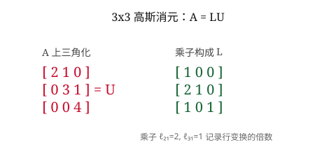

消元是系统化的代入
高斯消元通过行变换把方程组化为上三角形式，然后回代求解。它是手工求解和计算机求解的共同基础。
18.06 · 第 2 课
高斯消元 (Gaussian elimination) 是求解线性方程组的系统代数方法。通过一系列行变换把矩阵化为上三角形式，求解便迎刃而解。消元的过程同时揭示了矩阵的秩、可逆性和 LU 分解结构，是整门课的算法基石。
我们从上一课的 \(3\times 3\) 例子开始：
\[ \begin{bmatrix} 2 & 1 & -1 \\ -3 & -1 & 2 \\ -2 & 1 & 2 \end{bmatrix} \begin{bmatrix} x \\ y \\ z \end{bmatrix} = \begin{bmatrix} 8 \\ -11 \\ -3 \end{bmatrix}. \]第一步：以 \(a_{11} = 2\) 为主元，消去它下方的两个元素。
第二步：以 \(a_{22} = \frac12\) 为第二个主元，消去它下方的元素。第 3 行减去 \(4\) 倍的第 2 行：\(2 - 4 \cdot \frac12 = 0\)，\(1 - 4 \cdot \frac12 = -1\)，右端 \(5 - 4 \cdot 1 = 1\)。
\[ \begin{bmatrix} 2 & 1 & -1 \\ 0 & \frac12 & \frac12 \\ 0 & 0 & -1 \end{bmatrix} \begin{bmatrix} x \\ y \\ z \end{bmatrix} = \begin{bmatrix} 8 \\ 1 \\ 1 \end{bmatrix}. \]第三步：回代 (back substitution)从下往上求解：
得到解 \(\mathbf{x} = (2, 3, -1)^T\)，与第 1 课列视角的答案一致。
消元过程中有两个主角：
主元的意义。 主元非零意味着该列与之前的列线性无关。如果主元为零且无法通过行交换补救，矩阵就是奇异的 (singular)——列向量线性相关，列空间退化。
考虑矩阵 \(A = \begin{bmatrix} 1 & 2 & 3 \\ 2 & 4 & 5 \\ 3 & 5 & 8 \end{bmatrix}\)。 第一步以 \(a_{11}=1\) 为主元，第 2 行减去 \(2\) 倍第 1 行，第 3 行减去 \(3\) 倍第 1 行，得到：
\[ \begin{bmatrix} 1 & 2 & 3 \\ 0 & 0 & -1 \\ 0 & -1 & -1 \end{bmatrix}. \]第二个主元位置 \(a_{22} = 0\)！但第 3 行第 2 列是 \(-1\)，非零。行交换 (row swap) 可以救命：交换第 2、3 行后得到非零主元 \(-1\)，消元继续。
行交换不可省。 有些矩阵在某个主元位置为零，且该列下方所有元素都为零。此时无论怎么行交换都无法得到非零主元——矩阵奇异，消元彻底失败。第 4 课的 LU 分解会系统地处理行交换。
每个行变换都可以表示为左乘一个初等矩阵 (elementary matrix)。例如，把第 2 行减去 \(\frac32\) 倍第 1 行：
\[ E_{21} = \begin{bmatrix} 1 & 0 & 0 \\ -\frac32 & 1 & 0 \\ 0 & 0 & 1 \end{bmatrix}, \quad E_{21} A = \begin{bmatrix} 2 & 1 & -1 \\ 0 & \frac12 & \frac12 \\ -2 & 1 & 2 \end{bmatrix}. \]三个消元矩阵依次作用：\(E_{32} E_{31} E_{21} A = U\)。把这些矩阵的逆相乘，就得到 \(A = LU\)——我们将在第 4 课展开。
对 \(n\times n\) 矩阵，消元的运算量约为 \(\frac23 n^3\) 次浮点运算（加法和乘法合计）。回代的运算量约为 \(n^2\)，相比消元可忽略。当 \(n\) 很大时，\(\frac23 n^3\) 主导一切。
消元是线性代数的"心脏"。 从求解方程组到计算行列式、求逆矩阵、LU 分解——几乎所有数值线性代数的核心算法都以消元为基础。

问题 1： 高斯消元的"主元"是指：
问题 2： 消元过程中发现主元位置 \(a_{kk} = 0\)，但下方某行在该列非零，应该：
问题 3： 对 \(n\times n\) 方程组，高斯消元的运算量约为：
问题 4： 初等矩阵左乘矩阵 \(A\) 的效果是：
高斯消元通过行变换把方程组化为上三角形式，然后回代求解。它是手工求解和计算机求解的共同基础。
主元的个数和位置决定了矩阵的秩和可逆性。主元为零且无法补救时，矩阵奇异，消元失败。
每个行变换对应一个初等矩阵，整个消元过程对应一系列初等矩阵的乘积，这为 LU 分解埋下伏笔。
消元的计算成本随 \(n\) 三次增长，这是数值线性代数中所有后续复杂度分析的基准。
lecture_slides/lecture_02.pdflecture_summaries/lecture_1_2_summary.pdf